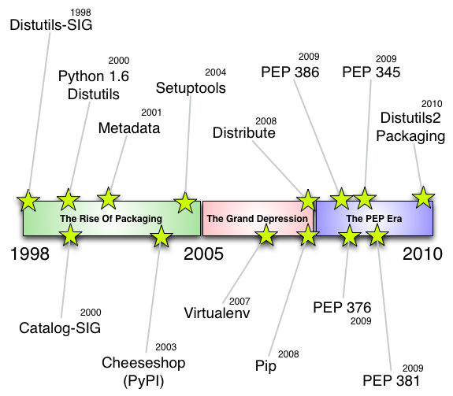
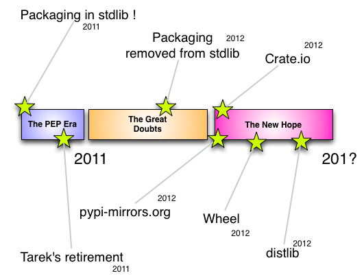

Conda
A cross-platform package manager
Created by Mateusz Paprocki / @mattpap
Before we begin - installing conda
Miniconda installers
Windows |
Mac OS X |
Linux |
|
| Python 2.7 | 64-bit / 32-bit | 64-bit | 64-bit / 32-bit |
| Python 3.4 | 64-bit / 32-bit | 64-bit | 64-bit / 32-bit |
Install on Linux and Mac OS X:
$ bash Miniconda-latest-Linux-x86_64.sh # or MacOSX instead of Linux
Install on Windows:
Miniconda-latest-Windows-x86_64.exe
Presentation plan
- about package management in general
- package management in Python
- setup.py, pip, wheels, ...
- conda
- introduction
- commands
- packages
- channels
- environments
- building packages
- disadvantages
- final words
Why we care about package management?
- user's perspective:
- seamlessly install software
- possibly not an expert
- developer's perspective:
- allow users to use his programs
- developer is a user as well
We all simply don't want to waste time.
Package manager or package management system
- is collection of software tools
- automates the process of software:
- installation
- configuration
- upgrading
- removal
- ...
- allows to resolve dependencies
- allows for reliability and reproducibility
Package management in Python
The history
 Installing
- setup.py install
- easy_install
- pip
- apt-get
- rpm
- emerge
- homebrew
- ...
What's wrong with Python packaging?
- binary packages
- install == build is not practical
- eggs fell out of use with pip
- now there are wheels, except on Linux
- non-python dependencies
setup.py install
- fine if it's pure Python, not so much if it isn't
- you have to have compilers installed
distutils.errors.DistutilsError: Setup script exited with error: command 'gcc' failed with exit status 1
setup.py install — installing NumPy
$ git clone -b v1.10.1 git@github.com:numpy/numpy.git
$ cd numpy
$ python setup.py install
Running from numpy source directory.
Cythonizing sources
Processing numpy/random/mtrand/mtrand.pyx
Traceback (most recent call last):
File "<string>", line 1, in <module>
ImportError: No module named Cython.Compiler.Main
Traceback (most recent call last):
File "/home/mateusz/repos/numpy/tools/cythonize.py", line 199, in <module>
main()
File "/home/mateusz/repos/numpy/tools/cythonize.py", line 195, in main
find_process_files(root_dir)
File "/home/mateusz/repos/numpy/tools/cythonize.py", line 187, in find_process_files
process(cur_dir, fromfile, tofile, function, hash_db)
File "/home/mateusz/repos/numpy/tools/cythonize.py", line 161, in process
processor_function(fromfile, tofile)
File "/home/mateusz/repos/numpy/tools/cythonize.py", line 81, in process_pyx
raise Exception('Cython failed')
Exception: Cython failed
Traceback (most recent call last):
File "setup.py", line 264, in <module>
setup_package()
File "setup.py", line 252, in setup_package
generate_cython()
File "setup.py", line 199, in generate_cython
raise RuntimeError("Running cythonize failed!")
RuntimeError: Running cythonize failed!
setup.py install
You are your own package manager.pip
- only works with Python
- not so great for (scientific) packages that have native dependencies
- try installing h5py if you don't have HDF5
pip
You are a "self integrator"What about wheels?
- Python package specific
- can't build wheels for native libraries
- can't make a wheel for Python itself
- still doesn't address the problem that some metadata is only in the package itself
- you are still a "self integrator"
Packaging problem?

Package maintainers hate having packages that no one can install.
System packaging solutions
Windows |
Mac OS X |
Linux |
|
|
|
| Cross-platform: conda | ||
Conda
- system level package manager (Python agnostic)
- Python, HDF5 and h5py are all conda packages
- cross-platform (works on Windows, OSX and Linux)
- doesn't require administrator privileges (sudo)
- installs bineries (no more compiler woes)
- metadata stored separately in the repository index
- uses a SAT solver to resolve dependencies before package are installed
Basic conda usage
| Install a package | conda install sympy |
| List all installed packages | conda list |
| Search for packages | conda search numpy |
| Create a new environment | conda create -n py3 python=3 |
| Remove a package | conda remove sympy |
| Get help | conda install --help |
Advanced conda usage
| Insall to an environment | conda install -n py35 sympy |
| Update all packages | conda update --all |
| Export list of packages | conda list --export pkgs.txt |
| Install from an export | conda install --file pkgs.txt |
| See package history | conda list --revisions |
| Revert to a revision | conda install --revision 23 |
| Clean installation | conda clean -pt |
| Install anaconda | conda create -n my-an anaconda |
What is a conda package?
a tarball (tar.bz2) with the files form a software package and some metadata /lib /include /bin /man /info Files are not Python specific Any kind of program at all can be a conda package Metadata is staticPackage specification

Python agnostic
A conda package can be anything:
- pure Python packages
- Python package with C extensions
- Python itself
- C/C++/Fortran etc. libraries (GDAL, netCDF4, dynd, ...)
- R
- node.js
- Perl
- ...
Installation
$ conda install sympy
- the tarball is unarchived in the pkgs directory
- files are hard-linked* to the install path
- shebang lines and other instances of a place-holder prefix are replaced with the install prefix
- the metadata is update, so that conda knows that a package is installed
- post-link script is run (these are rare)
Environments
$ conda create -n py35 python=3.5
- environments are simple: just link package(s) to a different directory
- hard-links are very cheap and very fast
- conda environments are completely independent installations of everything
- no fiddling with PYTHONPATH
- no symlinking to site-packages
- "activating" an environment just means changing your PATH, so that environment's bin/ or Scripts/ comes first
Activating an environment
| Unix | $ source activate py35 |
| Windows | $ activate py35 |
Use cases for environments
- trying new versions of Python
- exploring new packages from PyPI
- testing (Python 2.6, 2.7, 3.3, 3.4, 3.5, ...)
- development
- reproducible science
Building
Conda Recipes
conda build path/to/recipe
- meta.yaml contains metadata
- build.sh is the build script for Unix and bld.bat is the build script for Windows
Example meta.yaml
- command line entry points
- fine-grained control over conda's relocation lgic
- inequalites for version of dependeices (like >=1.2, <2.0)
- "Preprocessing selectors" allow using the same meta.yaml for many platforms
- see for full documentation
- conda build is only oa convenient wrapper
- you can also build packages manually just by following the package specification
- http://conda.pydata.org/docs/spec.html
Sharing
Self hosting
conda index directory/linux-64
- you can self-host
- store packaes in a direcotry by platform (osx-64, linux-32, linux-64, win-32, win-64)
- run conda index on that directory to generate the repodata.json
- serve this up or use a file:// URL as a channel
- binstar is just a very convenient hosted wrapper around conda index
Downsides
- conda uses its own build of Python (!= python.org)
$ python Python 2.7.10 |Continuum Analytics, Inc.| (default, Sep 15 2015, 14:50:01) [GCC 4.4.7 20120313 (Red Hat 4.4.7-1)] on linux2 Type "help", "copyright", "credits" or "license" for more information. Anaconda is brought to you by Continuum Analytics. Please check out: http://continuum.io/thanks and https://anaconda.org >>> - developed mainly by one company
- conda packages can't be used by pip
- many programs and libraries don't have a conda package
- environments may need manual activation outside bash/zsh (see e.g. fish shell issue #540 and a solution)
Unfortunate (?) feature(s)
- conda always attempts to update installed software
- unless it was installed with explicit version number, e.g.
conda install numpy=1.8.1
- because people do not update their software
- and then they report issues about arbitrary versions of obsolete software (maintenance nightmare)
- conda doesn't distinguish manually and automatically (dependencies) installed packages
- this is an issue when you remove a package and its dependencies are not removed as well
- this is a bug in conda (see issue #232)
Unfortunate (?) feature(s) - example 1
$ conda install ipython
Fetching package metadata: ....
Solving package specifications: ..................
Package plan for installation in environment /home/mateusz/miniconda:
The following packages will be downloaded:
package | build
---------------------------|-----------------
decorator-4.0.4 | py27_0 11 KB
ipython_genutils-0.1.0 | py27_0 32 KB
path.py-8.1.2 | py27_0 45 KB
pexpect-3.3 | py27_0 60 KB
simplegeneric-0.8.1 | py27_0 6 KB
conda-3.18.3 | py27_0 175 KB
pickleshare-0.5 | py27_0 8 KB
traitlets-4.0.0 | py27_0 88 KB
ipython-4.0.0 | py27_0 915 KB
------------------------------------------------------------
Total: 1.3 MB
Unfortunate (?) feature(s) - example 1
The following NEW packages will be INSTALLED:
decorator: 4.0.4-py27_0
ipython: 4.0.0-py27_0
ipython_genutils: 0.1.0-py27_0
path.py: 8.1.2-py27_0
pexpect: 3.3-py27_0
pickleshare: 0.5-py27_0
simplegeneric: 0.8.1-py27_0
traitlets: 4.0.0-py27_0
The following packages will be UPDATED:
conda: 3.18.2-py27_0 --> 3.18.3-py27_0
Proceed ([y]/n)?
Unfortunate (?) feature(s) - example 2
$ conda create -n ipy python
(...)
$ conda list -n ipy | grep -v '^#' | wc -l
9
$ conda install -n ipy ipython
(...)
$ conda list -n ipy | grep -v '^#' | wc -l
18
$ conda remove -n ipy ipython
Fetching package metadata: ....
Package plan for package removal in environment /home/mateusz/miniconda/envs/ipy:
The following packages will be REMOVED:
ipython: 4.0.0-py27_0
Proceed ([y]/n)? y
Unlinking packages ...
[ COMPLETE ]|####################################| 100%
$ conda list -n ipy | grep -v '^#' | wc -l
17
Final words
- conda is completely open source (BSD)
- https://github.com/conda/conda
- mailing list: conda@continuum.io
Creating a new environment
$ conda create -n py35 python=3.5
Fetching package metadata: ....
Solving package specifications: .
Package plan for installation in environment /home/mateusz/miniconda/envs/py35:
The following packages will be downloaded:
package | build
---------------------------|-----------------
xz-5.0.5 | 0 504 KB
python-3.5.0 | 0 16.6 MB
setuptools-18.4 | py35_0 345 KB
wheel-0.26.0 | py35_1 77 KB
pip-7.1.2 | py35_0 1.4 MB
------------------------------------------------------------
Total: 19.0 MB
The following NEW packages will be INSTALLED:
openssl: 1.0.1k-1
pip: 7.1.2-py35_0
python: 3.5.0-0
readline: 6.2-2
setuptools: 18.4-py35_0
sqlite: 3.8.4.1-1
tk: 8.5.18-0
wheel: 0.26.0-py35_1
xz: 5.0.5-0
zlib: 1.2.8-0
$ conda info
Current conda install:
platform : linux-64
conda version : 3.16.0
conda-build version : not installed
python version : 2.7.10.final.0
requests version : 2.7.0
root environment : /home/mateusz/miniconda (writable)
default environment : /home/mateusz/miniconda
envs directories : /home/mateusz/miniconda/envs
package cache : /home/mateusz/miniconda/pkgs
channel URLs : https://repo.continuum.io/pkgs/free/linux-64/
https://repo.continuum.io/pkgs/free/noarch/
https://repo.continuum.io/pkgs/pro/linux-64/
https://repo.continuum.io/pkgs/pro/noarch/
config file : None
is foreign system : False